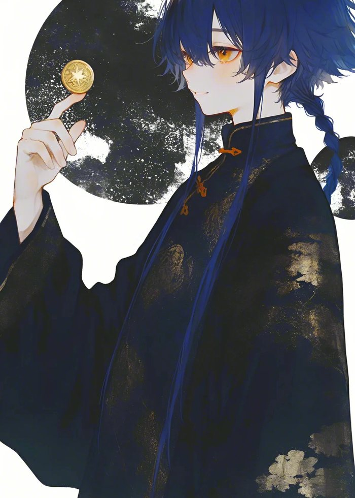

男性，裕宏茶馆现任掌柜。成渝辣子店的正对门邻居，与苏明若常有来往。
性格随和圆融，却不失原则。对他而言，一碗茶、一出戏、一批又一批老主顾，就是最好的日子。
经营裕宏茶馆多年，将一座普通茶馆做成了赤莲街的文化地标。白日评书、夜晚戏曲，日日不重样。
不收门票，因为一碗茶钱就够了——「演戏的得吃饭，看戏的也得吃饭。」
苏明若责怪他的戏害得客人们不好好吃饭，他不急不恼：「再晚，耽误明儿上工了。」最终想出让客人带面碗进茶馆的折中方案，还主动提出赔偿损坏的碗筷。
Neta 角色页待补。